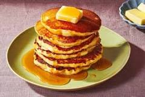

Pancakes

Golden and fluffy hommade pancakes with a wonderful and sweet taste.
Ingredients:
- 1 cup all-purpose flour
- 2 tbsp sugar
- 2 tbsp baking powder
- 1/2 teasp salt
- 1 cup milk
- 2 tbsp unsalted butter, melted
- 1 egg
- 1 tbsp vegetable oil
- toppings of your choosing
Preperation
preheat the oven to 200 degrees with a baking sheet and
a heatproof platter ready to keep
pancakes warm after cooking
Mix dry ingrediens in a small bowl (flour, sugar,
baking powder and salt).n
Mix wet and dry ingredients. Add to milk and eggs,
whisk until just moistened.
Heat up a shillet with oil and pour pancakes
in small circles, cook each side for 1-2 mintes.
Serve hot with chosen toppings for best taste
(whipped cream with strawberries, or honey works great)